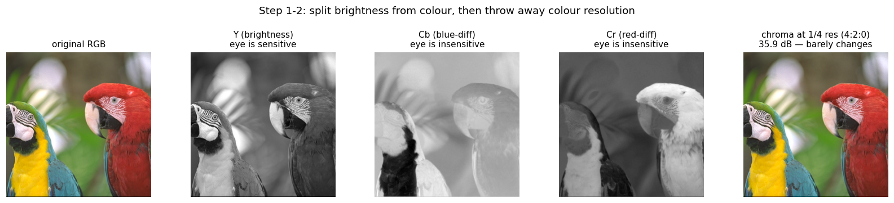
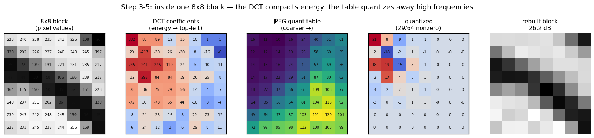
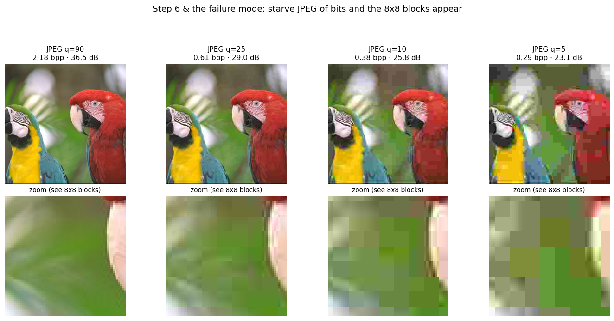
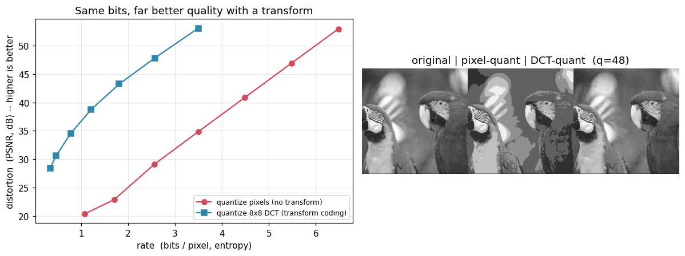
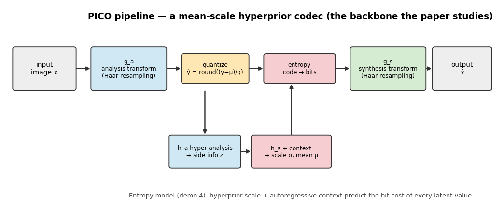
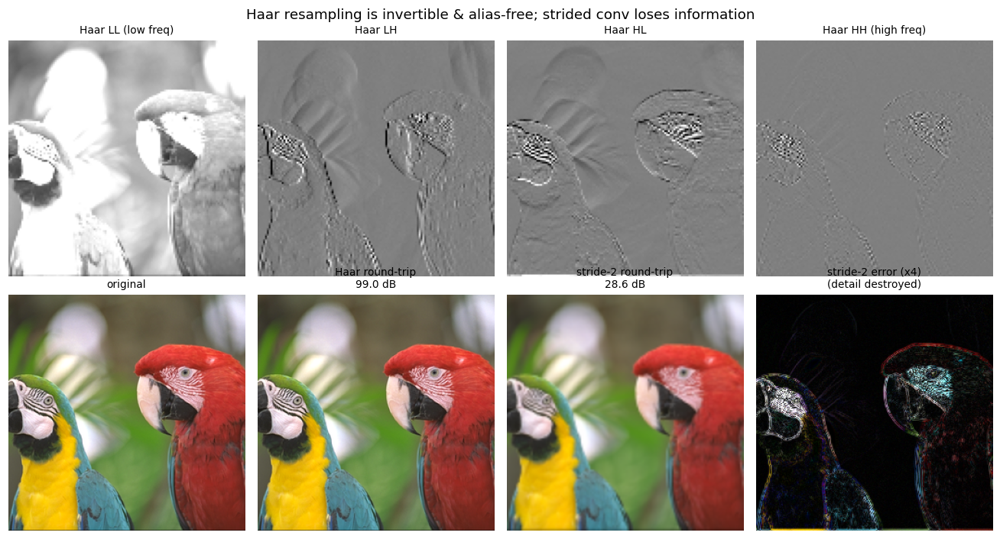
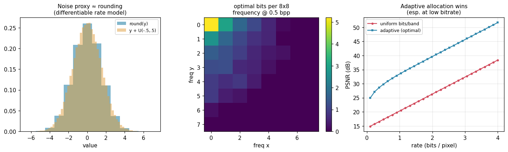
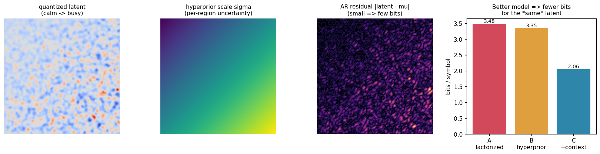
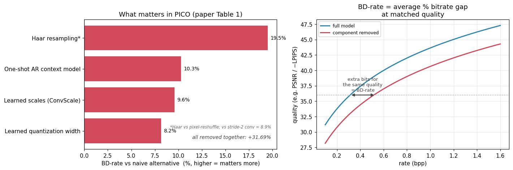

What Matters in Practical Learned Image Compression
Reading notes on Apple’s PICO codec — the history of image compression,
what PICO changes, and small Python simulations of each idea.
Paper: K. Tatwawadi et al., What Matters in Practical Learned Image Compression (PICO),
arXiv:2605.05148, 2026 [17]. ·
Prepared as a study-group companion — a learning aid, not the official codec. Every claim about prior
work is cited; see References.
These are my reading notes on the PICO paper, written for the undergraduates I mentor. Read them top to bottom:
the history explains how we got here, the numbered sections explain what
PICO does, and the demos let you see each idea. Every claim about prior work is cited (References).
Then it’s your turn: go to “Your turn” and tell me what you
think — is PICO a genuine breakthrough, or clever engineering on top of known ideas? Come with an argument.
PICO is the first learned image codec that is both practical (fast enough to run on a phone)
and optimised directly for human perception rather than for PSNR.[17]
The paper is essentially a giant ablation study answering one question: of all the design choices in a learned
codec, which ones actually move the needle?
2.3–3×bitrate savings vs AV1, AV2, VVC, ECM, JPEG-AI (human study)
20–40%savings vs the best prior learned codecs
as fast as 230 / 150 msencode / decode of a 12 MP image on an iPhone 17 Pro Max (best case)
+31.7%BD-rate lost if you drop all four key components at once
★ The story: how we got to PICO
Image compression has had three big eras — hand-crafted codecs, the learned-codec
revolution, and the perceptual turn. PICO is what happens when all three finally meet on a phone.
Oren Rippel (PICO’s senior author) has a paper in almost every chapter of this story.
1992 – 2020 · Era 0
The classical age: hand-crafted transforms
JPEG (1992) set the recipe every later standard merely refines: a fixed transform (the DCT of
demo 1), quantization, entropy coding.[1]
JPEG 2000 (wavelets, 2000),[2] WebP (2010),[3]
BPG / HEVC-intra (2014),[4] AV1 (2018)[8] and
VVC/H.266 (2020)[15] each squeezed out a little more — all designed by
human experts, all implicitly chasing pixel fidelity, all hitting diminishing returns.
2016 – 2018 · Era 1
The learned revolution: train the whole pipeline
If the transform, quantization and entropy model are all differentiable, why not learn them
end-to-end from images? Toderici et al. (Google, 2016) used RNNs;[5]
Ballé, Laparra & Simoncelli (2017) gave us the autoencoder-with-noise-quantization formulation still
used today.[6]Rippel & Bourdev’s “Real-Time Adaptive
Image Compression” (ICML 2017) was the first learned codec to beat every standard and
run in real time — already using adversarial training at low bitrates.[7]
Then Ballé et al. (2018) added the scale hyperprior[9] and
Minnen et al. (2018) the autoregressive context[10] —
the very pieces in demo 4.
2019 – 2021 · Era 2
The perceptual turn: stop optimizing for PSNR
Blau & Michaeli (2019) proved a rate–distortion–perception trade-off: at low
bitrate you cannot maximise fidelity and realism — you must choose.[13]HiFiC (Mentzer et al., NeurIPS 2020) showed the payoff: a GAN-based codec at 0.237 bpp was
preferred to BPG that used 2.1× more bits.[14] Meanwhile Rippel’s
WaveOne pushed the same ideas into video — “Learned Video Compression”
(ICCV 2019, first to beat HEVC)[12] and ELF-VC
(ICCV 2021),[16] which made a single model span many bitrates
efficiently: a deliberate step toward deployability.
~2021 · The wall
The practicality wall
Now there were two non-overlapping worlds: learned codecs that looked stunning (HiFiC) but were
slow, GPU-only, large and non-deterministic across devices; and traditional codecs that ran
everywhere but had plateaued. No codec was both perceptually excellent and shippable on a phone
with bit-exact decoding. WaveOne — acquired by Apple in 2023 — had spent years
building precisely toward that deployability.
2026 · Era 3 — the synthesis
PICO: perceptual and practical
PICO (Tatwawadi, …, Rippel, Apple) is where the two threads finally merge.[17]
It keeps the perceptual objective of Era 2 but makes it run on an iPhone in ~230 ms with bit-exact
cross-device decoding — via runtime-aware NAS plus cheap-but-powerful components (Haar resampling,
ConvScale, one-shot context, learned q) and a careful perceptual-loss recipe. Result, judged by
humans: 2.3–3× over the best hand-designed codecs, 20–40% over the best learned ones.
So why is PICO a breakthrough? Not because any single trick is new —
most pieces trace back through the timeline above. It is because PICO is the first codec to cross the
practicality wall while staying perceptually optimal: it turns “learned compression looks amazing
in papers” into “learned compression you could actually ship on a phone,” and it settles the
PSNR-vs-perception debate at scale with large human studies. It is the culmination of Rippel’s decade-long
arc: image → video → efficient → perceptual → on-device.
★ A concrete example: JPEG, and why PICO is a new direction
To see what makes PICO interesting, it helps to look at how we have compressed images for thirty years.
Almost every photo you have ever seen is a JPEG[1] — a beautifully hand-engineered
signal-processing pipeline. (This walkthrough follows the same signal-processing intuition as
this explainer video.)
How JPEG works — the 30-year recipe
Split brightness from colour. Convert RGB → YCbCr. The eye is far more sensitive to
brightness (Y) than to colour (Cb, Cr), so the two can be treated differently.
Throw away colour resolution (chroma subsampling). Store colour at half or quarter
resolution. You genuinely do not notice — the first free lunch, paid for by a fact about human vision.
Cut the image into 8×8 blocks and process each one independently.
Transform each block with the DCT. This rewrites 64 pixels as 64 frequencies. Natural image
blocks are smooth, so almost all the energy lands in a few low-frequency coefficients — exactly the
transform-coding idea in demo 1.
Quantize with a table (the lossy step). Divide each coefficient by a number and round;
high frequencies get coarser bins because the eye barely sees them. This one table is JPEG’s
entire model of human vision — a fixed, hand-tuned guess.
Entropy-code the result (zig-zag scan → run-length → Huffman) to pack the many zeros tightly.

demo6_jpeg_pipeline.py — Steps 1–2 on a real image: brightness (Y) is kept sharp while
the two colour channels (Cb, Cr) are stored at 1/4 resolution. The reconstruction barely changes (~36 dB),
because human vision spends most of its acuity on brightness, not colour.
Inside one 8×8 block (steps 3–5)
The heart of JPEG is what happens to a single 8×8 block. The DCT rewrites its 64 pixels as 64
frequency coefficients. Because natural blocks are smooth, the “energy” piles up in the top-left
(low-frequency) corner while the bottom-right (fine detail) is almost zero — this energy compaction
is the whole reason transforms help. The quantization table then divides each coefficient and
rounds: its values grow toward the bottom-right, so high frequencies are quantized coarsely (often to zero) and
low frequencies finely. Reading the result in a zig-zag order lines up all those zeros so
run-length + Huffman coding can crush them.

One textured block: pixels → DCT (energy to the top-left) → divide by the quant table → most high
frequencies vanish → inverse-DCT rebuild. That fixed table is JPEG’s entire model of the eye.
What happens when you starve it of bits (step 6 & the failure mode)
To shrink the file, JPEG simply scales the quantization table up — coarser bins, more zeros, fewer bits.
But because every 8×8 block is quantized independently, at low bitrate each block collapses toward its own
average and the seams between neighbours stop lining up. That is the origin of the classic blocky
artefacts: JPEG is approximating the original coefficients, and when it runs out of bits the
approximation breaks down in a very visible, structured way.

Real JPEGs (Pillow’s encoder) from high to very low quality, with a zoom row. The 8×8 block grid
becomes obvious as the bitrate drops — exactly the failure mode a perceptual, generative codec is built to avoid.
Decoding just runs the whole thing backwards. And here is the punch line: JPEG 2000,[2]
WebP,[3] BPG,[4] AV1[8]
and VVC[15] are all refinements of these very boxes — smarter
transforms, smarter prediction, better-tuned perceptual knobs — but the boxes are always
hand-designed and fixed, and the goal is always to describe the original pixels compactly
and reconstruct an approximation. This is the ceiling PICO breaks away from.
Why PICO is an interesting new direction
PICO keeps the shape of this pipeline (transform → quantize → entropy-code) but changes two things at a
fundamental level:
Every box is learned, not hand-designed. The transform, the quantization widths and the
entropy model are all trained from data — and the architecture itself is discovered by searching
millions of configurations, instead of being written down by an expert.
The objective shifts from “match pixels” to “match perception.”
JPEG’s model of the eye is a single quantization table; PICO optimises directly for the human visual
system with deep perceptual + adversarial losses. So at very low bitrate JPEG breaks into blocks
while PICO regenerates a plausible texture that simply looks right.
That second point is the real paradigm shift: from “describe-and-approximate”
(keep a lossy copy of the actual coefficients) toward “compress-and-regenerate”
(store a compact code and let a generative decoder paint a perceptually-equivalent image). Compression starts to
look less like signal processing and more like a tiny, conditioned image generator.
Stage
JPEG (fixed, hand-designed)
PICO (learned)
Colour / input
YCbCr + chroma subsampling
learned analysis transform ga
Transform
8×8 DCT (fixed basis)
learned non-linear transform + Haar resampling
Quantization
one fixed quant table
learned per-content bin width q
Entropy coding
zig-zag + run-length + Huffman
hyperprior + autoregressive context
Model of the eye
the quant table (a heuristic)
explicit perceptual + GAN losses
Who designs it
human experts
NAS over millions of configs
Low-bitrate failure
blocky artefacts
plausible regenerated texture
One-sentence version: for 30 years we compressed images by
hand-designing a clever way to describe the pixels; PICO instead learns the whole
pipeline and optimises it for how images look to people — turning a codec into a fast, on-device
generative model.
1 The problem: rate vs. distortion
Image compression is a tug-of-war between two numbers: the rate (how many bits the file takes,
measured in bits-per-pixel, bpp) and the distortion (how different the decoded image is
from the original). You can always shrink one by sacrificing the other. A codec is “better” when its whole
rate–distortion (RD) curve sits above a competitor’s — more quality for the same bits.
The single most important trick is transform coding: instead of quantizing raw pixels, first apply a
transform that packs the image’s energy into a few coefficients, then quantize those. JPEG uses a fixed
DCT; learned codecs like PICO replace it with a learned non-linear transform (a neural autoencoder).
The demo below quantizes the same image both ways:

demo1_transform_coding.py — at the same bitrate, an 8×8 DCT beats raw-pixel
quantization by several dB. Learned transforms push this further.
2 How PICO works, step by step
PICO is built on the now-standard mean-scale hyperprior autoencoder.[9][10]
Here is exactly what happens to your image on the way in (encoding) and on the way out (decoding). As you read, watch
for which boxes are learned neural networks and which are fixed maths.

demo5_ablation_rd.py draws this pipeline; each numbered step below maps to a block in it.
Encoding: image → bits
Tile the image. A 12 MP photo is cut into non-overlapping 504×504 tiles, each padded to
512×512 with a 4-pixel contextual margin from its neighbours, so each piece fits in phone memory and is processed on
its own. (fixed)
Analysis transform ga — the “learned DCT”. A small convolutional network turns
each tile (H×W×3) into a much smaller latent tensor y (roughly H/16 × W/16 × C channels), down-sampling with
invertible Haar wavelets instead of stride-2 convs (§3). This is JPEG’s fixed
8×8 DCT replaced by a learned, non-linear transform. (ML — learned)
Quantize the latent. Round y to whole numbers using a learned, per-content bin width q
— finer bins where detail matters, coarser where it doesn’t (§4). This rounding is the
only place information is actually lost. (ML — learned q)
Predict each value’s bit cost (the entropy model). A side “hyperprior” network plus a
one-shot autoregressive context network read the quantized latent and output, for every number, a probability
distribution (a mean µ and a scale σ) (§5). A sharper prediction means fewer bits. (ML — learned)
Write the bitstream. A standard arithmetic / range coder turns the integers into the actual file,
spending −log₂P bits on each value using the predicted probabilities. (fixed algorithm)
Decoding: bits → image
Entropy-decode the bitstream back into the exact same integer latent (same probabilities, run in
reverse). (fixed)
Synthesis transform gs. A second learned network — the mirror of ga,
up-sampling with Haar — turns the latent back into pixels. Because it was trained with perceptual + adversarial
losses, at low bitrate it regenerates plausible texture instead of blurring (§7).
(ML — learned)
Re-assemble the tiles into the full image. (fixed)
So which steps did ML replace?
Every box that was a hand-designed formula in JPEG is now a trained network — and the shape of those
networks was itself chosen by a performance-aware neural architecture search (NAS) over millions of
configurations, constrained to hit a target phone runtime.[17]
Step
JPEG (fixed)
PICO
ML?
Lives in
Split / resample
8×8 blocks
tiles + Haar resampling
partly — tiling is fixed; Haar resampling sits inside the learned transforms
both
Transform
fixed DCT
conv analysis ga
yes
encoder
Quantize
fixed quant table
learned per-content width q
yes — q is an output of the context net, not its own model
decoder side
Probability model
fixed Huffman
hyperprior + context → µ, σ
yes
both
Write bits
Huffman coder
arithmetic / range coder
no — fixed algorithm
—
Reconstruct
inverse DCT
conv synthesis gs
yes
decoder
Design the architecture
human experts
NAS over millions of configs
yes — meta-learned, run offline (ships 0 params)
—
Only three shipped neural networks do the real work — the analysis transform ga, the
hyperprior + context probability model, and the synthesis transform gs — bundled into an
encoder and a decoder (sizes below). The learned width q is just an output of the
context net, and NAS is an offline search that ships nothing.
How big are the networks?
The paper reports sizes for the two bundles that actually ship — an encoder and a decoder — not for each box.[17]
Bundle
Parameters
On disk
Peak on-device memory
Channels / scale
Encoder (ga + entropy estimation)
15.2M
30.4 MB
38.8 MB
64 / 96 / 96
Decoder (gs + entropy decoding + context)
9.6M
19.4 MB
25.4 MB
160 / 64 / 32
Combined
≈24.8M
≈49.8 MB
—
—
≈25M parameters is tiny by modern ML standards — the win comes from the design and the
objective, not from scale. The paper gives no finer per-component breakdown (ga vs hyperprior vs
context vs gs), so the bundle contents in brackets are approximate. The learned width q is an output of the
context net, and the NAS search runs offline (0 inference parameters).
Why this matters: making every step learnable lets PICO optimise the whole chain for a single goal
at once — and that goal is human perception, not pixel error. How that goal is actually measured is covered in
§7.
3 Haar-wavelet resampling top lever · up to ~19.5%
Every time the network changes resolution it must down- or up-sample. The usual choices — a stride-2 convolution,
or a naive “pixel-reshuffle” (space-to-depth) — either throw information away or alias fine
detail. PICO instead resamples with 2D Haar wavelets: one H×W×C block becomes
(H/2)×(W/2)×4C, keeping all the information (perfect reconstruction) and cleanly splitting low- vs
high-frequency sub-bands — for free, since Haar folds into a 1×1 conv at inference. The network then decides what
to spend bits on, instead of the resampler silently destroying detail.
In the paper’s ablation this is the single largest architectural lever: replacing Haar with a naive
pixel-reshuffle costs ~19.5% BD-rate, and with a stride-2 conv/deconv ~8.9%.[17]
(Demo 2 below illustrates the underlying principle — invertibility — using a stride-2 baseline.)

demo2_haar_resampling.py — top: the four Haar sub-bands (LL/LH/HL/HH).
Bottom: Haar down-then-up reconstructs the image exactly (≈99 dB), while stride-2 + bilinear loses
detail (≈28.6 dB). The right panel shows the destroyed high-frequency content.
4 Quantization & learned bin width ~8.2%
Quantization is the only lossy step, and it is not differentiable, so learned codecs lean on two tricks:
Straight-through estimator (STE): round on the forward pass, copy the gradient straight through
on the backward pass — so the encoder can still be trained.
Additive U(−½,½) noise: a differentiable stand-in for rounding whose distribution
matches the quantized one, used to estimate the rate during training.
PICO also learns a per-content quantization widthq: how finely to quantize each region.
The principle is adaptive bit allocation — spend bits where the signal has energy, skip where it doesn’t.
The demo shows the textbook version (“reverse water-filling”) on real image statistics: optimal allocation beats a
uniform bit budget by 10+ dB at low bitrate.

demo3_quantization.py — left: the noise proxy matches rounding. Middle: optimal bits per DCT
frequency. Right: adaptive (content-aware) allocation lifts the whole RD curve.
5 The entropy model: hyperprior + context ~10.3%
After quantization, the latent must become bits. The count is set by the probability model:
bits = −log₂ P. A better model of the same latent means fewer bits — a free, lossless win.
PICO builds the model in stages:
Factorized: one global distribution — ignores all structure.
Hyperprior: a tiny side channel transmits a per-region scale — “how uncertain is each area.”
Autoregressive context: predict each value’s mean from already-decoded neighbours and
code only the residual. PICO uses a one-shot (checkerboard/channel) AR model so it stays fast on-device.

demo4_hyperprior_entropy.py — on a correlated, heteroscedastic latent the estimated bits/symbol
drop monotonically: factorized → hyperprior → +context. The entropy model is where bits are really saved.
6 So… what actually matters?
The paper’s headline table measures each component by its BD-rate increase when its design choice is
swapped for the naive alternative — i.e. how many extra bits you would need for the same quality without it.
Higher = matters more (metric: CMMD-CLIP BD-rate).

Left: the ranking from the paper. Right: what BD-rate measures — the horizontal gap between two RD
curves at matched quality.
Design choice
BD-rate vs naive alternative
Demonstrated in
Haar resampling
~19.5%†
demo2
One-shot autoregressive context
~10.3%
demo4
Learned scales (ConvScale)
~9.6%
architecture (per-channel learned scales)
Learned quantization width
~8.2%
demo3
All of the above together
~31.7%
—
† The ~19.5% is vs a naive pixel-reshuffle; replacing Haar with a stride-2 conv/deconv
instead costs ~8.9%. — “Learned scales” (ConvScale): small learnable per-channel input/output scales folded
into convolutions plus a per-channel spatial activation scale at each resolution — free at inference (reparameterized
away) yet worth ~9.6%.
7 Optimising for the eye — and how it’s scored
The deepest finding is about the objective: what you grade a codec on decides what it becomes. There are two
distinct “scores” at play here, and confusing them is a classic mistake.
The training objective (what the network minimises)
Like every learned codec, PICO minimises rate + λ · distortion — few bits and a faithful
image, with λ trading the two off. The twist is that “distortion” is not plain MSE but a blend aimed at human vision:
MSE anchors it, LPIPS[11] and MS-SSIM reward perceptual similarity, the
GAN term rewards realism (texture that looks real, not merely close), and two targeted terms fix the
artefacts people notice most — legible text and seamless tile boundaries. Training runs in two phases
(an MSE warm-up, then perceptual/GAN fine-tuning) so the GAN does not collapse. The “rate” term is the entropy
model’s differentiable predicted bit cost (§5), so the entire chain trains by gradient descent.
The evaluation (how victory is actually claimed)
You cannot trust a model graded only by its own loss, so PICO is judged by separate yardsticks:
Large subjective human studies — tens of thousands of pairwise “which looks
better?” comparisons, turned into Elo rankings. Real people, real preference: the gold standard.
BD-rate on perceptual metrics — the rate–distortion curves are scored with metrics that
track human opinion (e.g. CMMD / LPIPS-style), not PSNR, then summarised as the average % bitrate saved at
matched quality (the gap pictured in §6).
Runtime as a hard constraint — a codec only counts as “practical” if it meets the
on-device latency budget (~230 ms encode / 150 ms decode for a 12 MP image). Quality is maximised
subject to that.
In those studies the perceptually-trained codec is dramatically preferred even where its PSNR is lower — the
rate–distortion–perception trade-off made concrete.[13] The lesson:
PSNR poorly reflects what humans see, and can even contradict their preference.
Why the choice of yardstick is the whole point. Grade with PSNR and blurry averages
win, so you build a blurry codec. Grade with human perception and a completely different design wins — one that
regenerates texture. Changing the scoring rule changed the answer; that, more than any single component, is
PICO’s thesis.[13](These demos implement the rate/MSE core; the
GAN recipe is described, not reproduced — see the box in §9.)
PICO also tiles big images (non-overlapping 504×504 tiles, padded to 512×512 with a 4-px contextual
margin) so a 12 MP photo fits in phone memory, and uses a bit-exact CPU path for the scale decoder so a file encoded
on one device decodes identically on another.
8 How PICO differs from earlier codecs
“Optimised for the human eye” is the headline, but concretely PICO changes four things at once:
the objective, the losses, the architecture, and the
deployment engineering. Here is what each actually means.
1 · The objective: from pixel error to perceptual realism
Traditional codecs (JPEG, AV1, VVC) and most early learned codecs minimise pixel error (MSE/PSNR).
At low bitrate the mathematically safe move is to blur: when the codec is unsure what a texture
looks like, outputting the average is what least upsets MSE — hence smearing, blocking and ringing.
PICO adds a GAN + perceptual losses, which instead ask the output to look like a real
photo in distribution. So when bits run out it does not smear — it generates a plausible
texture (grass, hair, brick). Pixel values may differ from the original (PSNR can even drop), yet
people judge the result as clearly better.
Why PSNR misleads: in PICO’s subjective studies (tens of thousands of
pairwise comparisons, Elo-ranked) the perceptual model is strongly preferred even when its PSNR is lower.
Chasing PSNR actively works against human preference.
2 · Targeted losses for the artefacts people actually notice
Beyond LPIPS + MS-SSIM + GAN, PICO adds two losses aimed at specific failure modes that most prior codecs ignore:
a text-fidelity loss (heavy L1 in detected text regions, GAN suppressed there, so letters stay
crisp instead of being “hallucinated” wrong) and a tiling-artefact loss
(multi-resolution consistency across tile seams). Training is two-phase — an MSE warm-up,
then perceptual/GAN fine-tuning — which is what keeps the GAN from collapsing.
3 · Components that are both better and cheap (found by runtime-aware NAS)
To stay fast on a phone, PICO runs a performance-aware neural architecture search over millions
of configurations, picking the most accurate backbone that still hits a target on-device latency. Several of its
building blocks (the “what matters” list above) are high-value yet nearly free at inference:
Haar resampling instead of strided conv — lossless, alias-free, and reparameterised into
1×1 convs so it costs nothing at inference.
ConvScale / learned scales — folded into the convolution weights at inference (free), yet worth ~9.6%.
One-shot autoregressive context — earlier AR entropy models decode pixel-by-pixel
(too slow to ship); PICO’s runs in a couple of parallel passes entirely on the accelerator.
4 · Engineering that makes it actually deployable
Tiling (non-overlapping 504×504 tiles padded to 512×512 with a 4-px contextual margin) so a 12 MP image fits in phone memory.
Bit-exact cross-device decoding — the entropy scale decoder is quantised to UINT8 and run on
CPU for IEEE-compliant floats, so a file encoded on one device decodes identically on another
(a float mismatch would otherwise break decoding entirely).
Latency — ~230 ms encode / ~150 ms decode for a 12 MP image on an iPhone 17 Pro Max,
faster than many top ML codecs running on a V100 GPU.
Side by side
Traditional (JPEG/AV1/VVC)
Earlier learned codecs
PICO
Transform
hand-designed (DCT)
learned
learned + runtime-aware NAS
Objective
pixel error
mostly PSNR (blurry), or perceptual but slow
perceptual / generative + targeted losses
Low-bitrate look
blocking / ringing
blur
plausible generated texture
Runs on a phone?
yes (mature hardware)
usually no (slow, GPU, non-deterministic)
yes — real-time + bit-exact
In short: PICO is the first learned codec that is both perceptually optimised
and genuinely deployable — that combination is the contribution, not either half alone.
★ Your turn: discussion questions
Read the notes above, then come to our session with a view on these. There are no “official” answers
— I want your reasoning, ideally backed by the references.
Was abandoning PSNR the right call? The rate–distortion–perception theory[13]
says fidelity and realism genuinely trade off. If a codec invents plausible texture that was not in the
original, is that acceptable for a family photo? A legal document? Where is the line?
Is PICO a real breakthrough or excellent engineering — and what is the key insight? Almost every
component traces back to earlier work (the hyperprior,[9] the context model,[10]
GAN-based compression,[14] flexible-rate video[16]). Does
combining known pieces to cross the “deployable and perceptual” threshold count as a breakthrough?
In one sentence, what is the paper’s core insight?
What is the next wall — e.g. the wall in MRI? PICO solved on-device natural-image
compression by letting the decoder regenerate texture. But in medical imaging (MRI/CT), an invented-but-plausible
detail could be a fake lesion. What does “the wall” look like there — and would a perceptual/generative
codec help or be dangerous? Sketch one concrete research idea.
Send me a paragraph per question, or annotate this page and bring it to the meeting.
9 Run the simulations yourself
Everything here is free and local (CPU or Apple-MPS). From the project folder:
pip install -r requirements.txt
python demos/demo1_transform_coding.py # transform coding & the RD trade-off
python demos/demo2_haar_resampling.py # invertible Haar vs lossy strided conv
python demos/demo3_quantization.py # STE, noise proxy, adaptive bin width
python demos/demo4_hyperprior_entropy.py # factorized -> hyperprior -> context
python demos/demo5_ablation_rd.py # architecture + "what matters" charts
# optional: actually train the tiny codec end-to-end (~3 min on MPS)
python demos/demo5_ablation_rd.py --train
Each script prints a short lesson and writes a figure into assets/ (the ones embedded above).
The demos auto-download one Kodak test image; offline, they fall back to a synthetic image.
What this project is not. It is a learning companion, not a reproduction of PICO. Out of scope:
the neural architecture search over millions of configs, on-device latency/runtime targets, a real range-coder bitstream
(we report estimated entropy as bpp), the GAN discriminator and text/tiling losses, the quality levels (8 coarse,
interpolated to 71), and the
large-scale (~120k image) training. The included TinyCodec is a faithful-in-spirit mean-scale hyperprior with
Haar resampling, masked-conv context and learned q — but a 3-minute toy on a handful of images will
not reproduce the paper’s ablation ordering; that needs full-scale training. The clean per-component
evidence lives in demos 2–4.
What you can take away. A working mental model of every block in a modern learned image codec,
correct isolated simulations of why each “what matters” component helps, and the central insight that practical,
perceptually-optimised compression — not PSNR chasing — is what makes PICO win.
★ References
Primary sources for the claims above. arXiv links are free to read; the 2026 entries are preprints,
and some venue details are not yet finalised.
G. K. Wallace. “The JPEG Still Picture Compression Standard.” IEEE Trans. Consumer Electronics, 1992. doi:10.1109/30.125072
A. Skodras, C. Christopoulos, T. Ebrahimi. “The JPEG 2000 Still Image Compression Standard.” IEEE Signal Processing Magazine, 2001. doi:10.1109/79.952804
G. Toderici, S. M. O’Malley, S. J. Hwang, et al. “Variable Rate Image Compression with Recurrent Neural Networks.” ICLR, 2016. arXiv:1511.06085
J. Ballé, V. Laparra, E. P. Simoncelli. “End-to-end Optimized Image Compression.” ICLR, 2017. arXiv:1611.01704
O. Rippel, L. Bourdev. “Real-Time Adaptive Image Compression.” ICML, 2017. arXiv:1705.05823
Alliance for Open Media. “AV1 Bitstream & Decoding Process Specification.” 2018. aomedia.org
J. Ballé, D. Minnen, S. Singh, S. J. Hwang, N. Johnston. “Variational Image Compression with a Scale Hyperprior.” ICLR, 2018. arXiv:1802.01436
D. Minnen, J. Ballé, G. Toderici. “Joint Autoregressive and Hierarchical Priors for Learned Image Compression.” NeurIPS, 2018. arXiv:1809.02736
R. Zhang, P. Isola, A. A. Efros, E. Shechtman, O. Wang. “The Unreasonable Effectiveness of Deep Features as a Perceptual Metric (LPIPS).” CVPR, 2018. arXiv:1801.03924
O. Rippel, S. Nair, C. Lew, S. Branson, A. G. Anderson, L. Bourdev. “Learned Video Compression.” ICCV, 2019. arXiv:1811.06981
Y. Blau, T. Michaeli. “Rethinking Lossy Compression: The Rate-Distortion-Perception Tradeoff.” ICML, 2019. arXiv:1901.07821
F. Mentzer, G. Toderici, M. Tschannen, E. Agustsson. “High-Fidelity Generative Image Compression (HiFiC).” NeurIPS, 2020. arXiv:2006.09965
B. Bross, Y.-K. Wang, J. Chen, et al. “Overview of the Versatile Video Coding (VVC) Standard (ITU-T H.266).” IEEE TCSVT, 2021. itu.int/rec/T-REC-H.266
O. Rippel, A. G. Anderson, K. Tatwawadi, S. Nair, C. Lytle, L. Bourdev. “ELF-VC: Efficient Learned Flexible-Rate Video Coding.” ICCV, 2021. arXiv:2104.14335
K. Tatwawadi, P. Rahimzadeh, Z. Sun, Z. Chen, Z. Yang, S. Nair, D. Hasteer, O. Rippel. “What Matters in Practical Learned Image Compression (PICO).” arXiv:2605.05148, 2026. arXiv:2605.05148 · project page · Apple ML Research
Background / verification: JPEG signal-processing explainer video
(youtube.com/watch?v=Kv1Hiv3ox8I). Author list for [17]
confirmed against the arXiv listing.